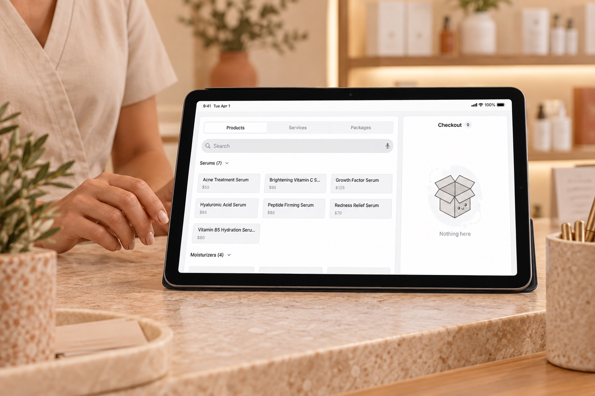
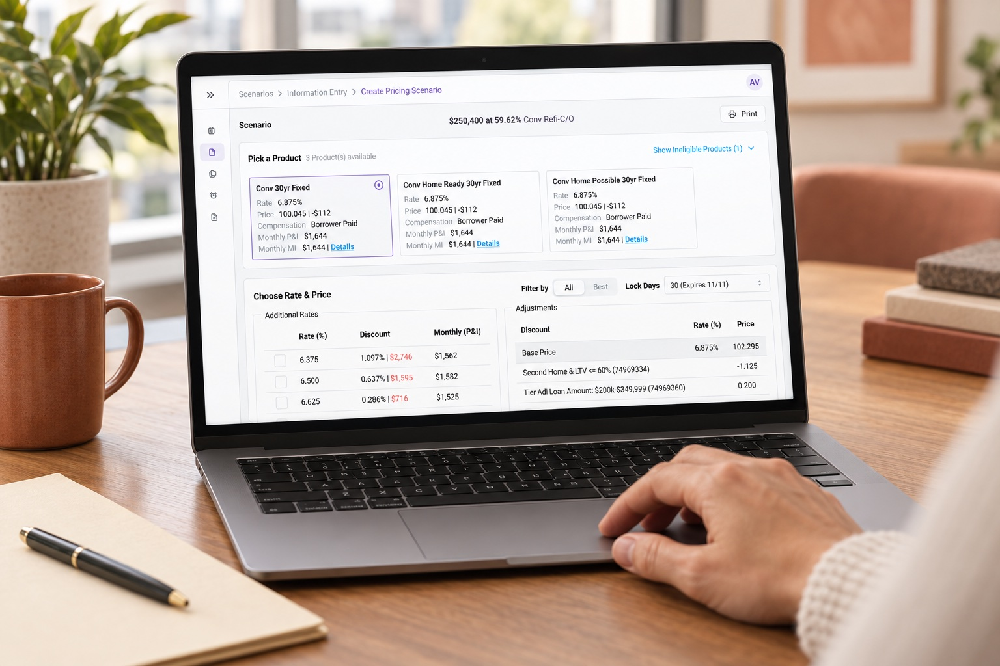
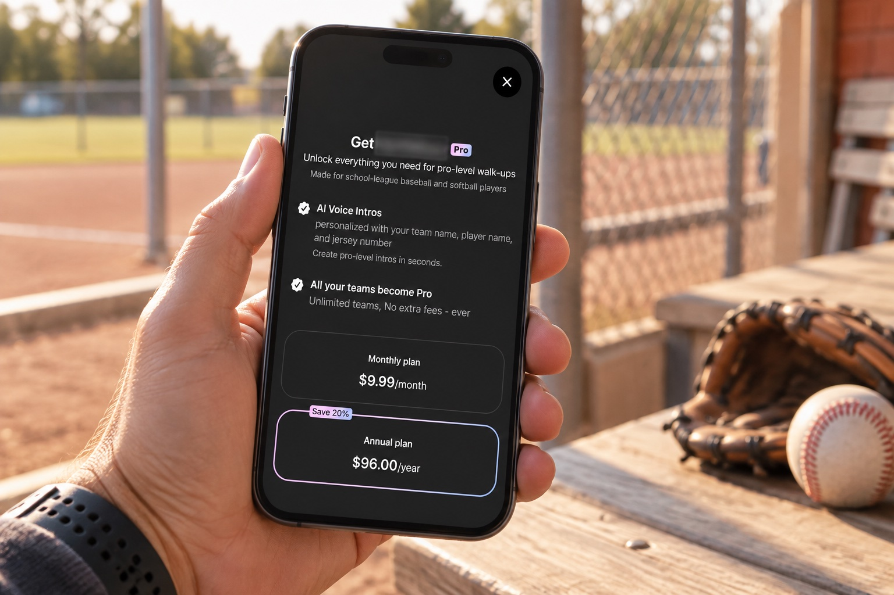
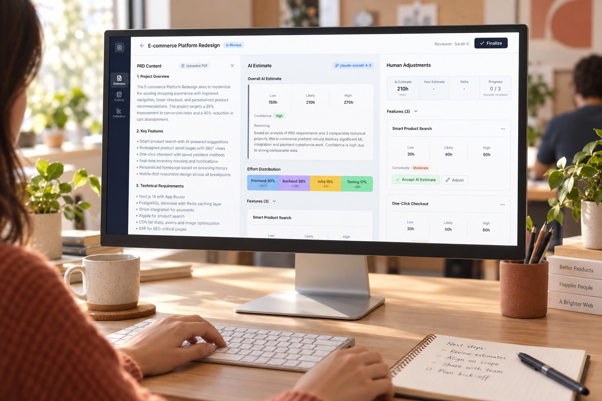

Understand the workflowbefore designing.
I break down complex workflows with the team to understand what each person needs to do and where friction appears.
- Workflow mapping
- Roles and needs
- Scope definition
- Workflow simplification
Product Designer | UX/UI Designer
I design clear, usable products for complex workflows, from financial platforms to mobile experiences.
With five years in product design, I connect user needs with what engineering can build. I collaborate from early ideas through to launch, bringing technical fluency and AI-assisted workflows.

I'm a Product Designer based in Peru, working remotely with U.S. teams. Over five years I've designed across FinTech, Sports Management, and Health & Wellness. I always stay close to the technical side of the product.
What sets me apart is how fluently I work with engineering: I understand APIs, endpoints, and how products are built, and I use AI-assisted workflows to move from design all the way to shipped code. I care about products that are simple, consistent, and genuinely buildable.
BASED IN
Peru · Remote
FOCUS
U.S. market
LANGUAGES
ES · EN

One platform for clinic administration, online shopping, and point of sale.

Clearer workflows and reusable patterns for loan officers and banks.

AI-generated player intros with simple setup and privacy built in.

From project brief to editable estimate, with design and front-end contributions.
HOW I WORK
I connect workflows, interfaces, and code in collaboration with product and engineering.
I break down complex workflows with the team to understand what each person needs to do and where friction appears.
I organize information and actions into clear interfaces, with reusable patterns that keep the product consistent as it grows.
I work closely with engineering and use AI-assisted workflows. When the project needs it, I contribute code, PRs, and reviews.
CCA-F certified · Context management, prompting, MCP, and model and cost trade-offs.